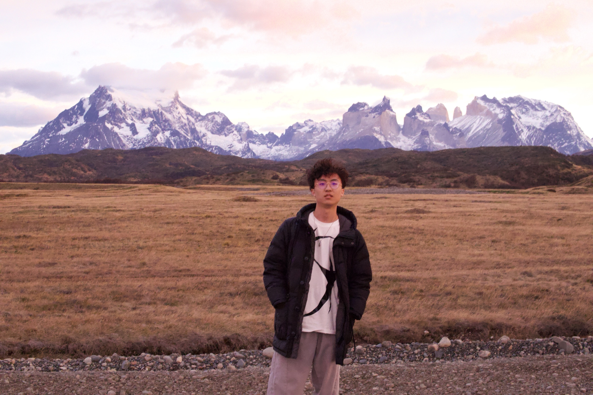

Respan
Head of DevRel
LLM gateway, observability, and evals. YC W24.

FRAN3C / ExperienceEngineering
Work with circuits, AI, and art.
A selected history across AI, electrical engineering, research, robotics, education, and creative work.
LLM gateway, observability, and evals. YC W24.
Worked on Samsara’s STCE team on its first-generation flat asset trackers, AT13 and TL11.
DevOps and backend for a social application selected for TechCrunch Disrupt 2023 and Beta University Accelerator 2024.
Control systems, linear positioning systems, and API integration.
Computer vision, U-Net model training, and active learning techniques.
Control, signal processing, robot platforms, and frequency-domain analysis.
Supported student lab activities and collaborated with professors and teaching assistants on lab-data research to improve learning experiences.
Actor coordination, sound effects, and lighting control for Variations on Death, The Pillowman, The Black Cat, and The Life of Galileo.
Power systems, imaging-technology assessment, and energy-distribution models.
Developed control systems and calibrated IMUs.
Taught DAW software and improved audio equipment at Chengdu Foreign Languages School.
Created and organized a blogging team focused on educational choices, interviews, bullying, and problems in the education system.
Developed evaluation models and wrote papers for American High School Mathematical Modeling Competition Team 10100; received an Honorable Mention in 2019.
Co-wrote and edited systematic reviews on the diagnosis and treatment of Helicobacter pylori infections, published in Frontiers and Wolters Kluwer.
Hi, I’m Sihan Chen. You can call me Frank. I earned a B.S. in Electrical Engineering from the University of Illinois Urbana-Champaign.
For work, collaborations, or a hello: csihan88@gmail.com